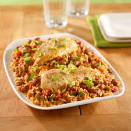

Spicy Chicken and Rice
This spicy chicken and rice recipe is perfect for a quick and easy weeknight meal. It's packed with flavor and can be customized to your liking with different spices and vegetables. Serve with a side of steamed broccoli or a simple salad for a complete meal.